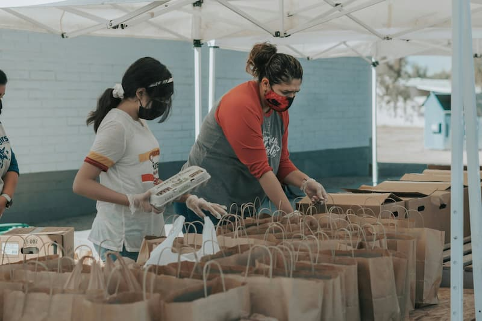

Missão
Transformar realidades locais conectando pessoas dispostas a ajudar a quem mais precisa.
Conectamos pessoas dispostas a ajudar a comunidades que precisam de apoio em educação, alimentação e cidadania.
Quero ser voluntário
A ONG Semear é uma organização sem fins lucrativos que atua em comunidades em situação de vulnerabilidade social, promovendo educação, segurança alimentar e inclusão por meio do trabalho voluntário.
Desde 2015, mais de 1.200 voluntários já participaram das nossas ações, que alcançam cerca de 3.000 famílias por ano na região metropolitana de Fortaleza.
Transformar realidades locais conectando pessoas dispostas a ajudar a quem mais precisa.
Ser referência regional em engajamento voluntário e transparência no uso de doações.
Endereço: Rua das Palmeiras, 123, Centro, Fortaleza/CE, CEP 60000-000
Telefone: (85) 99999-0000
E-mail: contato@ongsemear.org.br
Atendimento: segunda a sexta, das 8h às 17h